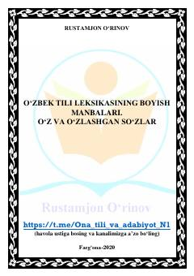

OTOʻzbek tilidagi oʻz va oʻzlashgan soʻzlarning kelib chiqishi va xususiyatlari haqida oʻquv qoʻllanma.
Ushbu qoʻllanma oʻzbek tili leksikasining boyish manbalari, xususan, oʻz qatlam va oʻzlashgan soʻzlarning kelib chiqishi hamda ularning tilimizdagi oʻrni haqida maʼlumot beradi. Unda soʻzlarning turli tillardan oʻzlashish jarayonlari, ularni aniqlash belgilari va zamonaviy oʻzbek tilidagi oʻzgarishlar tahlil qilinadi.